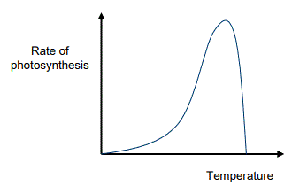
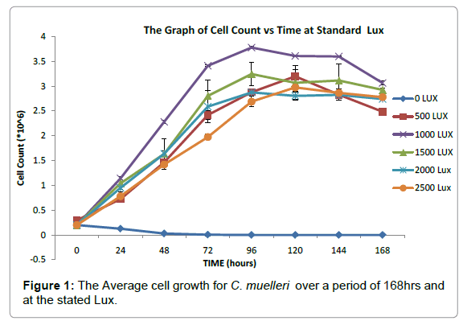

Photosynthesis
Variables that affect the rate of photosynthesis: There are several factors that affect the rate of photosynthesis (or how fast sugars are produced in plants). These include: (a) light intensity (brightness), (b) carbon dioxide concentration, (c) temperature, and (d) light wavelength. The relationship between light intensity and photosynthesis is shown in the graph below.

- Light intensity (amount/brightness of light). When there is no light, no photosynthesis takes place. As the light intensity increases from zero, the rate of photosynthesis increases. After a certain point, the rate of photosynthesis will not increase any more with increasing light intensity. This happens because there is just not enough chlorophyll and other chemicals in plant cells to increase the rate of photosynthesis any more.
- Carbon Dioxide concentration. When there is no CO2, photosynthesis does not occur. Increasing the concentration of Carbon Dioxide will increase the rate of photosynthesis. But after a certain point, the rate of photosynthesis will not increase any more as CO2 concentration increases.

So, after a certain point, more carbon dioxide in the air will no longer help plants grow.
-
Temperature. The relationship between temperature and rate of photosynthesis
is different from the others. Again, when the temperature is very low, no photosynthesis
occurs. The increase in photosynthesis rate is slow at first, but starts to increase
more quickly at a certain point. The rate of photosynthesis is highest between 10
and 20 degrees Celsius (or 50-68 degrees F). After this maximum, the photosynthesis
rate drops off quickly as the temperature increases. At around 40 degrees C (or 104
degrees F), photosynthesis stops. As a result, plants cannot grow anymore.

- Why does photosynthesis stop at high temperatures? There are certain molecules called "enzymes" made by living organisms. Enzymes speed up chemical reactions. Chlorophyll is one enzyme that helps cause photosynthesis. Another enzyme, called RuBisCo, has the job of capturing CO2. When the temperature is too high, RuBisCo gets very bad at capturing CO2, which is needed for photosynthesis. As a result, photosynthesis stops.
-
Light wavelength. Certain
frequencies of visible light
speed up or slow the rate of photosynthesis. Sunlight that has energy in the blue-violet and red frequency
ranges causes the highest rates of photosynthesis. Sunlight in the green range causes lower rates of
photosynthesis. This is because chlorophyll pigment molecules do not absorb green light well* (and do not
convert this radiation into energy that causes the chemical processes in photosynthesis).
- *This is why plants' leaves look green to us: green light is not absorbed; instead, it is reflected away by the molecules that make up the plants.
Relationship between light intensity (how bright the light is) and algae growth. The graph below show the relationship between the number of diatomic algae cells in millions (for the species Chaetoceros muelleri) and time (up to 7 days). Each different line shows the relationship for a different light intensity, from 0 lux (no light) to 2,500 lux (a medium-bright day).



{kind=link}